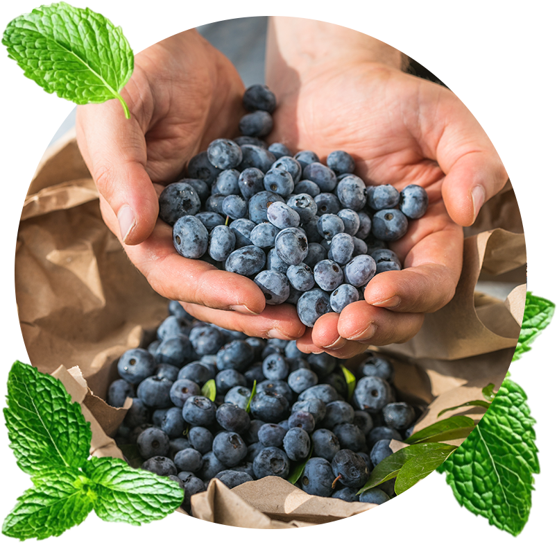

정직한 먹거리에서 시작하는 농업의 미래
영글어농장은 농업을 사람의 건강과 일상을 뒷받침하는 중요한 산업으로 바라봅니다.

작물을 이해하는 재배
작물의 특성을 살피고 온실의 재배 환경을 관리합니다. 오랜 재배 경험에 과학적이고 체계적인 생산 방식을 더하고자 노력합니다.
생산자와 소비자를 잇는 유통
정성껏 기른 농산물이 생산자에게 합당한 가치를 돌려주고 소비자에게 합리적으로 전달될 수 있도록 온·오프라인 유통을 함께 고민합니다.
농산물의 쓰임을 넓히는 개발
제철 농산물을 신선식품으로 소개하는 데서 나아가, 건조·분말·과즙 등 일상에 활용하기 좋은 형태로 제안합니다.
공식 참고 자료
원문 확인 ↗